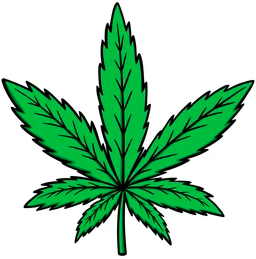
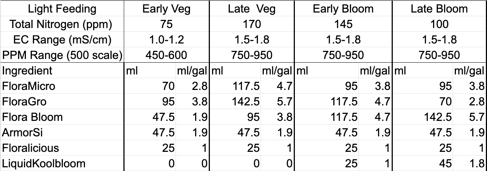
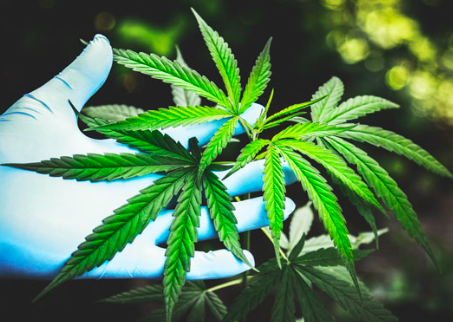

(To see the bare minumum requirements to grow in soil both indoor and outdoor. Please click on the link that says First Time Grower; on the first page)
Lucas' Guide to growing in soil
Gathering the martials:
Requirements:
- Potting soil or a fresh mix of soild thats suited for cannabis. For a guide on how to mix your own soil for cannabis please refer to This Article
- Big pots (at least 5 gallons)
- Small pots for your germanted seedling
- Nutrients (Gerneral hyrdopinic: Floramicro, Floragro and Florabloom)
- A grow tent
- LED full spectrum grow light
- Fans - both to draw air in and out of the tent and to blow air around the tent.
- Germinated cannabis seeds
It Helps:
- Humidifier
- De-humidifier
- PH down and up
- Humidity and tempure readers
- Net
- PH readers
- 20 or 40 x jewlers loop
- A spray bottle
- Time based outlet plug
- Nutrients (ArmorSi, Floralicious and LiquiKoolbloom)

How to start your grow
- Set up your tent
- Make sure you tent is sturdy and can support at least 30 lbs.
- Make sure your light is on a good light schedule (i normally like to do 6 hours light on 2 hours light off when my plant in in the veg stage)
- Make sure you have your fans both bring air in and out of the tent but also blowing air around the tent
- Fill a small pot with soil and drench it completly in water while mixing the soild around
- Placed germanted seed about a quarter to a half inch deep in the pot
- Place all pots with germinated seeds in your grow tent
Tips for vegatative stage
- The period of growth before you plant starts to flower is know as the vegative state.
- You can keep your plant in the vegatative state as long as it has more then 12 hours of light in a 24 hour period. (personally i like to have 6 hours of light 2 hours not light. Then i let that cycle run 3 times a day till I'm ready to flower.)
- Water deeply (until excess water flows from the pots)
- Water only when dry (Touch the soil. Is it dry when you put your finder a quarter inch inside it. If so water it!)
- You want the relative humidity of the space they are growing in to be inbetween 50% and 75%.
- You want the soil's ph to be between 6 and 7. (6.5 is ideal)
- Air should be circulating both from the tent and from within the tent. (Keep in mind that the amount of airflow circulating to and from your tent will directly correlate to humidity both inside and outside the tent)
- If you see the plant turning a brighter color its time to give it nutrients.
Soil feeding chart


Tips for Flower
- The period prior to chopping the plant down is known as the flower stage
- To put your plants in flower change your light cycle to 12 hours on 12 hours off
- The ideal ph range for a plant in flower is between 6.5 and 7.5 (7.0 being ideal)
- The ideal humidity range is betwee 25% and 50%
- Make sure there is heavy airflow going through and out of the tent. (This is the period when the plants are their largest. Make sure leaves are not preventing airflow. Remove leaves if nessesary for airflow.)
- Defoliate (for a guide on how to defoliate click Here)
- Do not go into flower if you plant is not 100% healthy. Flower is the most stressful time for the plant since it is spending all of its energy creating the nugs. To ensure a good yeild make sure your plant is in top condition prior to flower
- Harvest when 20-50% of the tricomes are an amber color (Use jewlers loop to see tricomes)
- Water with nutrients every time unless you are about to harvest. Stop adding nutrients at least 3 weeks prior to harvest.